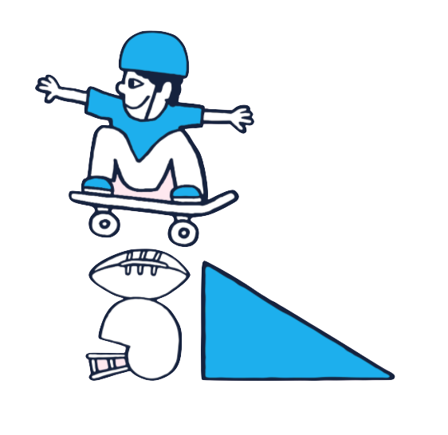

4PLY MAG
March 2021
Skate After
School

An interview with Tim Ward By Richard Bay
I first became aware of the work that Tim Ward and the Skate After School team were doing shortly
after moving to Tempe, Arizona in late 2014. I didn’t know Tim personally at that time, but right away I
could see the social significance of such a project. As a kid I quit organized sports at age 12 to focus on
skateboarding with my friends. Like so many youths, I never really enjoyed organized sports. I played
football the longest and looking back I believe that if my school had offered a skateboarding program at
a younger age, I would have chosen it over football no question.
Skate After School provides an activity that is organized only to the point of allowing these children to
access their own self-expression, and to complete their own goals, with no goal being too big or too
small. In other words: it offers freedom. That to me is the essence, or soul if you will, of skateboarding.
Tim and his crew are providing this experience to kids who otherwise would not have the means or
encouragement to undertake the skateboarding process. So, I was of course super stoked when Tim
agreed to do this interview, and I hope it can get them even more appreciation for what they do,
because they deserve it.

So what year did y’all start doing this?
A version of what SAS would become started happening as far back as 2012, when
I started collecting spare parts from friends and made a donation bin at the
indoor skatepark I was working at at the time. When things really started to begin
to look like what SAS is now, that happened in 2013 when Bobby Green and Ryan
Lay got involved in the project as well.
Good guys to have on your team for sure. So how many schools are you
involved with now?
“now” is tricky because we’ve existed in a sort of altered reality for the last year.
But when things were normal, we were operating at 8 schools.
Yeah weird times, but what are the age ranges of the participants when you are
in full session?
We focus our program to kids who are 2nd grade through 6th grade so generally anywhere from 7 to 12.
And how many students do you serve?
During normal times we see between 200 - 240 kids per week.
Amazing man. I’m sure that’s a lot of work, how many volunteers have you all
had over the years?
Oh wow, so many, and all such awesome people. Hard to say the exact amount
because some people have stopped by to visit once or twice and some are regular
consistent volunteers! We do background check everyone so a quick count of how
many volunteer background checks we’ve done is 75! wow. There have been
others over the years and that doesn’t count some student volunteers we've had
through Arizona State Volunteers. I’d imagine we’ve had over 100 amazing people
volunteer their time to help our kids skate safely!
Real life heroes. I know a couple of those guys and can attest to their
awesomeness. How many skateboards have you provided for the kids over the years?
That is really hard to quantify. Giving away skateboards isn’t necessarily
something we ‘do’ or set out to do. We would occasionally give a brand new
board to a few kids each year for special holiday things, and every kid that we
take to Woodward or YMCA skate camp gets a brand new complete, but the idea
of the program was to give them something to stay after school for with us, not to
give them a board and possibly never see them again. But through the Skateboard
Angel program at Cowtown Skateboards, we’ve been able to give a brand new
skateboard to ALL of our participants for the last 4 years in a row. Crazy to say but
that’s likely close to 1,000 skateboards just through that one program!
Separately from that, we launched the Radical Reshuffle this year during covid.
We couldn't go to our schools so we decided to put together as many boards as
we could using parts that were at our warehouse, as well as getting some new
and used donations from friends and local skateshops to get more skateboards to
kids in Phoenix. We were able to build and distribute over 250 skateboards
between March-November. That’s basically a board a day that we gave away!
I was on your website and found that the number of
students in Phoenix greater that go unsupervised after school is roughly
214,000. That is a staggering number. When the dream of a return to normalcy,
or something close to it becomes a reality, are you looking to expand your
reach?
Our
program started just about as organically as anything possibly could have and it’s
continued to expand since its inception. What expanding looks like to most
people is more schools, more cities, more kids etc. As much as we believe in what
we do and would love to someday see Skate After School exist in every school, in
every city, available for every kid, expanding in that way isn’t necessarily our goal.
We have built such amazing relationships with the kids we’ve worked with, the
schools and administrators that we have worked with, and our amazing
volunteers over the years, that I worry about expanding too much and too quickly
causing us to lose some of the magic that we have!
Makes sense, do the best with what you can type attitude, I think everyone can
appreciate that. So, what does expansion look like to you then?
What we talk about more in
the way of expanding is how we can build out a more robust and substantial
program but keeping the scale and the size of our operation as small and
manageable as it is now. We want to expand on our summer camp trips, where
we have the opportunity to take some of our participants out to California for
amazing skate camp experiences. We talk about expanding within our program to
create a longer-term track for our participants where they can come back as
student volunteers, then maybe even someday work for or even run the
program themselves someday!
So, are you planning to reopen this school year?
We are going to do a safe relaunch end of the year relaunch to some of our
schools we worked with in the past and some of the kids we worked with. Hoping
in the fall to do a relaunch of the program that we know, where we can serve
hundreds of kids a week at multiple schools. We might have to make a couple
small tweaks, but we have the benefit of being outside already.
Important question: where can people go to donate?
People can go to skateafterschool.org/donate to support our programs. The best
way is to sign up to be a ‘buddy’ and do a sustaining donation. You’ll get a cool pin
too :)
So, Ryan Lay is doing a hike right now, “Heck of a Trek”?
He is hiking the Arizona trail which goes from north Mexico to Utah, so it covers
the entire state of AZ from south to north, it passes through Tucson, misses
Phoenix by a little, passes through Flagstaff and then up through the Grand
Canyon and into Utah. He’s doing 800 miles, and as we speak right now, he’s
something like 120 miles in.
How long is the entire trip going to take?
45 days, but that might not be super strict. He did a 24 mile day the other day, but
he’s also done two days where he rested, those are called zero days. This was a
personal goal of his and we’ve had a lot of downtime because of Covid, so he’s
been planning this for about a year. When schools weren’t coming back in the fall
we realized he could take a month and a half off and do more good than he could
here.
That’s amazing man, dude’s a beast.
It’s a gnarly feat, it’s a crazy adventure that he’s on.
What’s the fundraising goal for Ryan’s hike?
When we started the fund raiser the goal was 8k ($10 per mile) but we wended
up reaching the initial goal before he even left. We raised the goal to 12,000 so
we can keep it going while he’s on the hike, and if it goes past that we’ll keep
going past that.
I’ve got a number for you Tim, and that number is 1, because that’s how many
of you there are, and although there’s a big team you’re the coach, and this
thing your doing is amazing, and I hope you take pride in that. Thanks for doing
what you’re doing and thanks for doing this man, much love to you and yours.
Awww thank you!
Thanks for reading! If this article gave you the feels like it did for us, then feel free to do like we did and donate what you can at skateafterschool.org/donate. Images from Diego Meek's Skate After School video which I would highly recommend to anyone interested in the program.